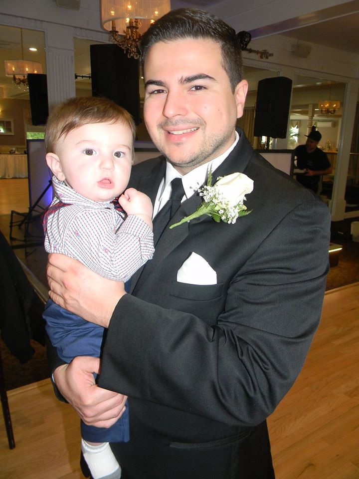

Sean Mokrane
IT Professional
Hard working and highly motivated individual seeking an opportunity to utilize and grow my skills in all fields. I am detail oriented, a self-starter, and enthusiastic. I enjoy solving problems and learning new things. Consider myself pretty
well-rounded in all aspects of IT.
Work Experience
Aurora Diagnostics
Jul. 2018 - Ongoing
IT Support Specialist\Tiger Analyst\Connect Dx Engineer.
- Remote and onsite Support of 120+ Practices that use our services (Hardware, Tiger Related)
- Troubleshoot network issues
- Installing and upgrading network equipment and software.
- Creating and maintaining documentation relating to network configuration, network mapping, processes, Software, and service records
- Establishing and documenting hardware, network, and software support processes and procedures
- Practicing hardware asset management, including maintenance of network component inventory and related documentation and technical specifications.
- Acting as technical liaison between clients, customers, and vendors to resolve issues as needed.
- Maintaining strictest confidentiality.
- Complying with all State, Federal, professional regulations as well as company and departmental rules, polices, and procedural manuals.
- Adhering to HIPAA, Safety and OSHA Regulations.
- One of two people responsible for supporting and implementing "Tiger" (Our proprietary pathology software).
- Quarterly sox compliance for the Pathology Solutions lab
Hackensack Meridian Health
Jan. 2017 – Jul. 2019
PC Specialist
- Responsible for resolving computer software and hardware problems in a fast-paced, deadline oriented environment.
- Responsible for responding to help desk tickets to address end users' concerns and requests for hardware and software repair.
- Responsible for installing and maintaining PC software, printers, and peripherals for corporate Edison and Affiliate sites.
- Responsible for deploying affiliate sites in a timely manner with many deadlines to uphold.
- Responsible for being On-Call for Jersey Shore University Medical Center for one week a month.
- Leading in the deployment of "Hope Tower, Jersey Shore's newest cancer center.
My Hobbies
Contact Me
Reference